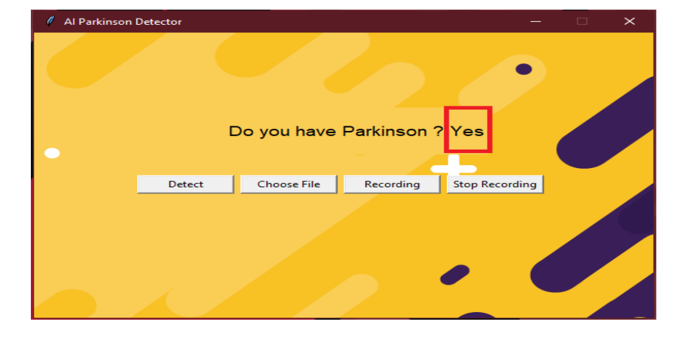

| Project Title | Project Description | Project Output |
|---|---|---|
| Sign Language Detection Using Deep Learning Techniques | A sign language recognition system is a powerful tool to prepare expert knowledge, edge detection, and the combination of inaccurate information from different sources. The intended convolution neural network is to get the appropriate classification.MediaPipe is used to dimension the output. The output of the system is to decrease the time complexity while detecting the images. | |
| Parkinson's Disease Detection Using Machine Learning | This project is being done for the mini-project in my college level. Parkinson’s Disease is a neuro-degenerative disease which causes due to the lack of dopamine in brain nerves. The prediction is done by using the logistic regression algorithm in machine learning and the Python libraries to train the model. |
 |